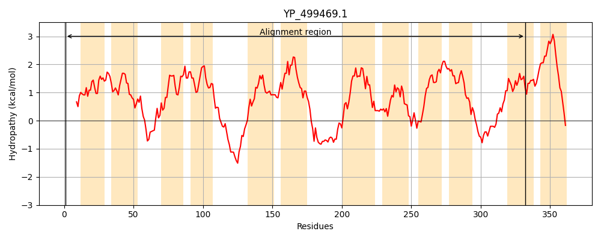
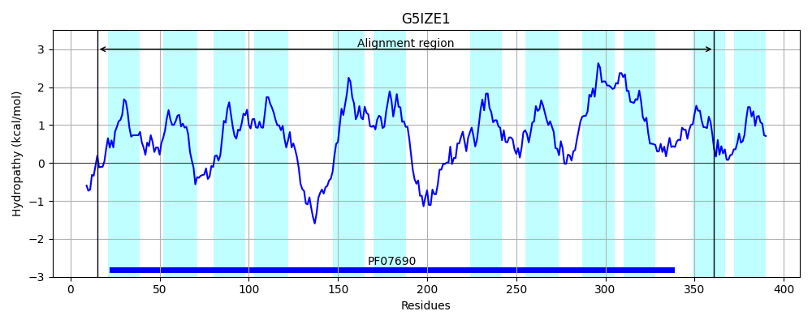
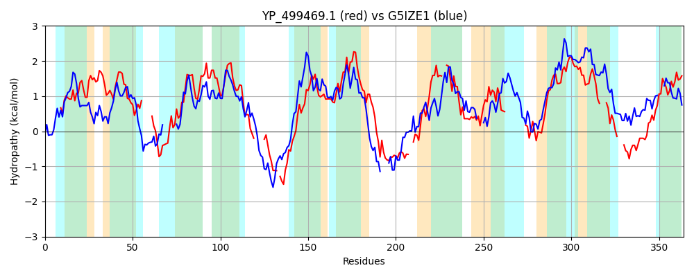

Hit Accession: G5IZE1
Hit TCID: 2.A.1.80.5
Hit Description: gnl|BL_ORD_ID|4783 gnl|TC-DB|G5IZE1|2.A.1.80.5 Uncharacterized protein OS=Crocosphaera watsonii WH 0003 GN=CWATWH0003_0633 PE=4 SV=1
Mach Len: 364
e:0.000001
Query TMS Count : 12
Hit TMS Count: 12
TMS-Overlap Score: 8.200000
Predicted Substrates:None
BLAST Alignment:
Score: 117 , Bit scores: 49 bits, E-value: 1.1e-06, Alignment length: 364, Percentage identity: 20
Query: 1 MNKLILGIYLYRIFSRAYFYLPFLLIYFLIQGYSIIQLEILMASYGIAAFLFSLYK-----EKCFKICNLKDSNKLVVSEIFKIIGLLLLLYQNQYLILVVAQILLGLSYSMMAGVDTAI-----IKRNITNE-KYVQNKSNSYMFLSLLISGIIGSYLYGINIKWPIIMTGIFSILTIIIIRCTLVENRELNLIGETKGKIKKFLPE--EKFWILHYSFLRALILG--FFIGFIPINIYNDLKLNNLQFISVLTCYTVMGFV-----------SSRYLTKYLNYKFVSEICLVIFLIIYTYQSFIAVTISMIFLGI---SSGLTRP---QTINKLSSSSNLRVMLNYAETLYFIFNIAFLLMG 332
M K + + + + S A+F +P +++++ G SI Q L I+ FL+ + + K C LV +I L+ Q +L ++A+ L G++ S+++G DTA+ ++ N E + ++K + +S I G+IG+ + N+ +P + I +L ++ + ++ E K ++K L + + I ++S L+ F +G I + L+N +V T + M +V ++ +L++ L K +++ + Y + I +++F+ + G P IN+L S + + F+F + F ++G
Sbjct: 15 MEKNLTKLLILKGLSFAWFPIPTIMLFYQSHGLSIEQSIFLKTVLSISFFLWEIPSGYVADRRGRKFC-------LVTGSGIWVISWLIYCTQQTFLWFILAEFLTGVAGSLISGADTALTYDTFLQLNRPQEYRKFESKLVAIAGISEAICGLIGAIVAQYNLVYPFYLQTICILLYCLLATKLIEPQHQI----EDKSQVKLNLGQIVKNALITNHSIRWLLLFSGTFSVGTFLIVWLSQAYLSN---YNVPTAFFGMMWVVFHGLMSVASLTTSHLSEKLGLKKALLSLIILLSVSYIFLGIIGQVWAILFVALIYCVRGWVTPLLNDAINQLVPSVTRATVFSVKS---FVFRLGFAIIG 361 | Protein Hydropathy Plots: |
|---|
|  |  |
Pairwise Alignment-Hydropathy Plot:
|
|---|
|  |